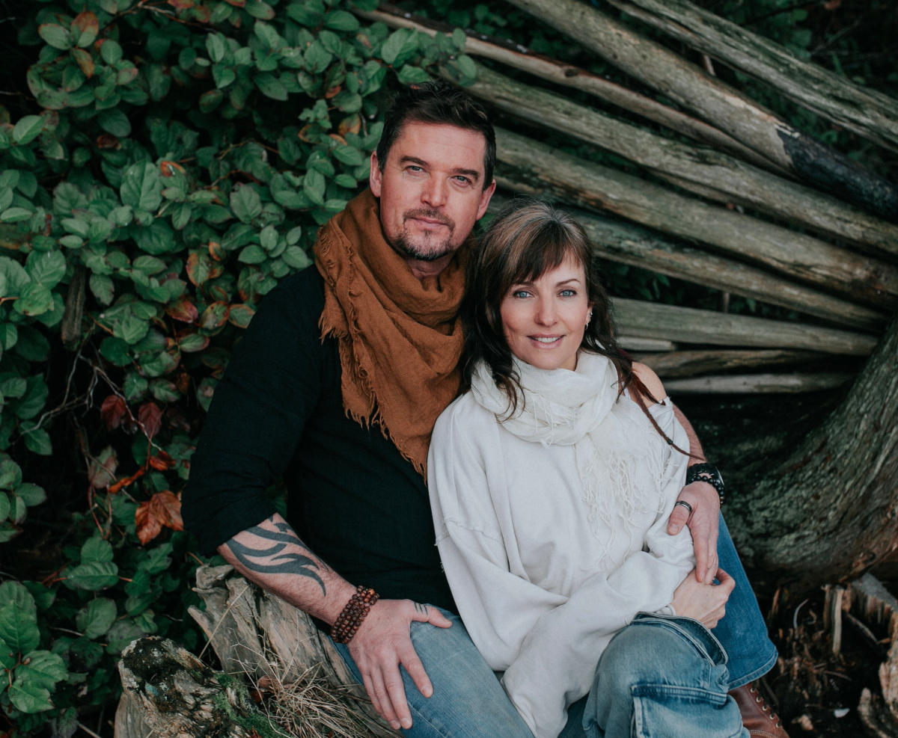

A couple of transformation and vision — stewards of ceremony, movement, and the quiet work of return. Together, they hold Ancient Fire.

Jesse has been a professional stunt performer since 2011. He has doubled the likes of Jensen Ackles on Supernatural as Dean Winchester for eight years — alongside Dougray Scott on Batwoman, Clive Standen, Kevin Alejandro, Jonathan Scarfe, and Sam Jaeger, to name a few.
He's performed action roles in Altered Carbon, Arrow, Supergirl, The Flash, Legends of Tomorrow, The 100, Van Helsing, Snowpiercer, Riverdale, Tracker, Fire Country, The Last of Us — and more.
Recently he's picked up the torch of stunt coordinator on feature films Viper, A Way Out, and The Stick Indian. His true passion lies in fight coordinating — his entry into stunts came from over thirty years of martial arts practice.
His dedication to sharing martial arts, breathwork, meditation, and holistic healing conceived Ancient Fire: a gathering place and school of mastery for students of life and teachers from around the world. The school originally found home in the Olympic Village of Vancouver, and has since evolved into an ever-growing retreat centre on Salt Spring Island.
"Impossible is nothing."
Amber has spent almost 20 years immersed in the practice of breathwork. She is a Certified Shamanic Minister, and is trained in many breathwork modalities.
Dedicated to sharing the profound medicine of breathwork with those willing to undertake the courageous journey of self-discovery, she brings her experience of ceremony and sacred medicine circle to her services.
Amber offers private sessions for individuals, couples, and groups.
"The breath is the bridge —
it carries us home."
Ready to awaken the inner fire?
Come find us.